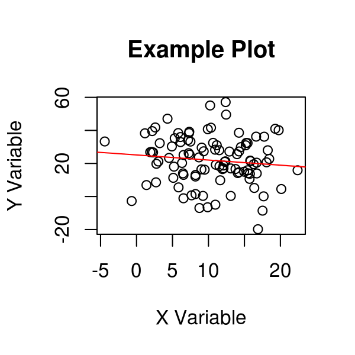
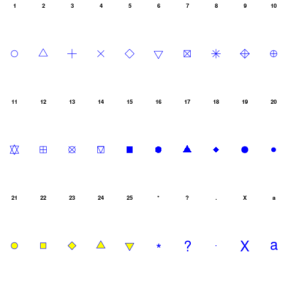
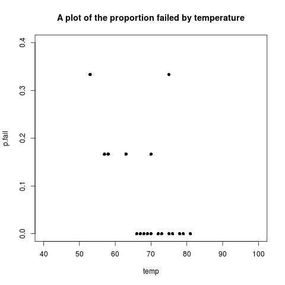

learnR
Table of Contents
1 fit a model
################################################################ # name:fit x<-rnorm(100,10,5) y<-rnorm(100,20,15) fit <- lm(y~x) summary(fit)
2 make a plot
################################################################ # name:plot # once the plot composition looks good, I write it directly to a hi res file # png('aPlot.png', res=200,width = 600, height = 600) plot(x,y,main="Example Plot",xlab="X Variable",ylab="Y Variable") abline(fit,col="Red") dev.off()

3 points
################################################################ # name:points png('pchopts.png') par(mfrow=c(3,10), mar=c(0,0,2,0)) for(i in c(1:25)){ plot(1,1,pch=i, axes=F, cex = 3, col = 'blue', bg = 'yellow') title(i) } for(i in c("*", "?", ".", "X", "a")){ plot(1,1,pch=i, axes=F, cex = 3, col = 'blue', bg = 'yellow') title(i) } dev.off()

4 statistical modelling
4.1 Logistic Regression using the NASA Challenger dataset
Copied from Peter Caley's notebook on challenger disaster page 103 'O' ring failures. https://alliance.anu.edu.au/access/content/group/bf77d6fc-d1e1-401c-806a-25fbe06a82d0/R%20wiki%20files/R%20logistic%20example/Caley%20Statistical%20Modelling%20Course%20Notes%20-%20Working%20copy.pdf
Plot the data A plot of the data is shown below:

Made with the following code:
################################################################ # name:learnR-logistic png('pfail.png') plot(temp, p.fail, pch=16, xlim=c(40,100), ylim=c(0,0.4)) title('A plot of the proportion failed by temperature') dev.off()